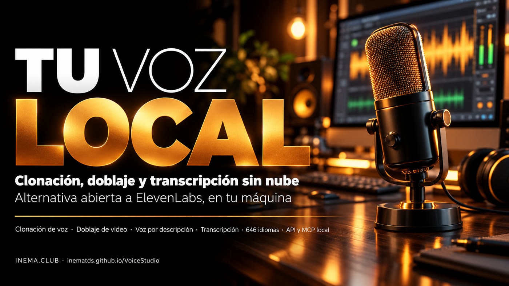

Clonación de voz, voz por descripción, doblaje y transcripción en 646 idiomas, en tu equipo y sin pagar por minuto.

VoiceStudio es un programa gratuito y de código abierto que hace en tu computadora lo que servicios de pago como ElevenLabs hacen en la nube. Copia una voz a partir de unos segundos de grabación, crea voces nuevas a partir de una descripción en texto, dobla videos y transcribe audio en 646 idiomas. Sirve para quien produce video, cursos, podcasts o audiolibros y quiere narración sin pagar por minuto ni enviar el audio hacia afuera. Necesita una computadora con unos 10 GB libres; con tarjeta de video NVIDIA es mucho más rápido.
Proyecto de debpalash/VoiceStudio (licencia AGPL-3.0), reflejado por INEMA con esta guía. Todo corre en tu hardware; los servicios remotos son opcionales.
Una grabación limpia de pocos segundos se convierte en una voz reutilizable. O describe la voz ("femenina, grave, tono de documental") y él arma una nueva.
Doblaje de video con el habla en el tiempo justo, transcripción con WhisperX, separación de quién habla y aislamiento de la voz del fondo musical.
API local compatible con la de OpenAI y servidor MCP: Claude Code y Codex pueden generar habla, clonar voz y transcribir directamente.
La app (Electron) se comunica con un backend en Python en el puerto 3900. El backend carga el motor elegido y mantiene los modelos en memoria.
OmniVoice (predeterminado, 646 idiomas), CosyVoice 3, IndexTTS 2.5, VoxCPM2, MOSS-TTS, dots.tts, GPT-SoVITS, KittenTTS, Supertonic 3, PocketTTS y otros. Cada uno tiene su licencia de modelo.
WhisperX (predeterminado), Faster-Whisper, Whisper, Parakeet TDT, Moonshine, FunASR y sherpa-onnx para dictado en vivo.
Los paquetes listos son para Windows, macOS y Linux x86_64. En Linux ARM64 (como el DGX Spark/GB10) no hay paquete ni imagen Docker: solo la instalación desde el código fuente.
Unos 10 GB libres para la app, Python y los modelos. NVIDIA (CUDA) o Apple Silicon aceleran; sin tarjeta corre en la CPU, más lento.
# verificar espacio y GPU df -h ~ ; nvidia-smi
Nada además del instalador: él descarga Python, FFmpeg, yt-dlp y los modelos en el primer uso.
# macOS / Linux x86_64 curl -fsSL https://voicestudio.sh/install | sh
Git, Bun, uv, Node.js 22+ y Rust/Cargo, además de las bibliotecas de audio del sistema.
curl -fsSL https://bun.sh/install | bash curl -LsSf https://astral.sh/uv/install.sh | sh
Los comandos de abajo vienen de la documentación oficial del proyecto.
En Windows, usa PowerShell. En macOS y Linux x86_64, el script de una línea. O descarga el .dmg, .exe, .AppImage o .deb desde la página de Releases.
# Windows (PowerShell) irm https://voicestudio.sh/install | iex # macOS / Linux x86_64 curl -fsSL https://voicestudio.sh/install | sh
Es el camino en Linux ARM64 y para quien quiere la versión más nueva. El setup:api prepara Python; el dev abre la app y levanta el backend.
git clone https://github.com/inematds/VoiceStudio.git cd VoiceStudio bun install bun run setup:api # entorno Python con uv bun run dev # app + backend en el puerto 3900
Para usar por API o MCP en un servidor, levanta solo el backend. Sin tarjeta NVIDIA, fuerza la versión de CPU de PyTorch.
bun run dev:api # backend en 127.0.0.1:3900 OMNIVOICE_TORCH_VARIANT=cpu bun run setup:api # sin NVIDIA curl http://127.0.0.1:3900/.well-known/voicestudio-speech
En la app, abre Voice cloning, elige una voz o sube una grabación limpia (sin música, sin ruido), escribe el texto y genera. La app pide instalar el modelo la primera vez (cerca de 2,4 GB).
# transcribir un archivo con el cliente que viene en el proyecto python -m backend.speech_client transcribe grabacion.wav
El servidor MCP ya viene montado en el backend en /mcp/. Herramientas: generate_speech, clone_voice, design_voice, transcribe, list_voices. Ejemplo para Codex CLI:
# ~/.codex/config.toml [mcp_servers.voicestudio] url = "http://127.0.0.1:3900/mcp/" http_headers = { "X-OmniVoice-Client-Id" = "codex-cli" }
En Claude Code, la app exporta el .mcp.json listo en Integrations.
El análisis de uso solo se activa con consentimiento. Para asegurar que quede desactivado, define la variable antes de levantar el backend.
export OMNIVOICE_ANALYTICS_DISABLED=1
Comparación con nuestra cadena de voz (inemavox con chatterbox, Whisper y doblaje; avatar con el estudio HeyGen).
| Función | Hoy en INEMA | VoiceStudio |
|---|---|---|
| Descarga | inemavox (yt-dlp) | yt-dlp también: nada nuevo |
| Transcripción | Whisper large-v3 / Parakeet | Equivalente (WhisperX, Parakeet) |
| Clonación de voz | chatterbox (voces nei, rachel) | 17 motores, incluidos OmniVoice, CosyVoice 3 e IndexTTS 2.5 |
| Voz en EN/ES sin avatar | Depende del estudio HeyGen | Motores multilingües con clonación |
| Voz por descripción | No tenemos | Sí (design_voice) |
| Aislar voz / separar hablantes | No tenemos | Sí |
| Agentes | Scripts propios | MCP y API en formato OpenAI |
El espejo y esta guía están publicados; la prueba práctica aún no se ha hecho.